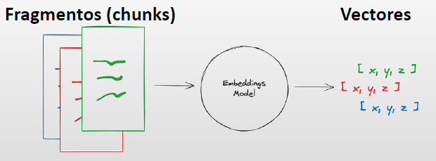
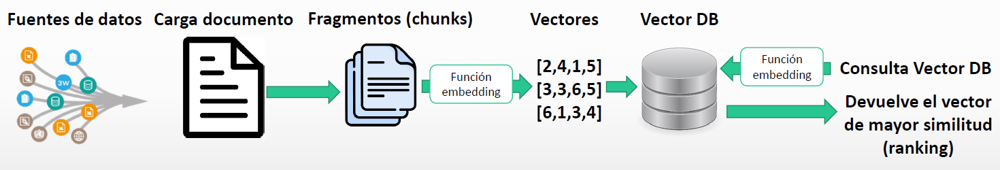

2. Bases de datos en LangChain.#
En este apartado vamos a ver los siguientes aspectos:
¿Cómo cargar fuentes de datos de todo tipo con Langchain
¿Cómo transformar documentos y fragmentarlos?
¿Cómo convertir documentos en vectores a partir de incrustaciones embeddings
¿Cómo almacenar los datos (internos y externos) en una base de datos vectorizada?
¿Cómo realizar consultas a la base de datos vectorizada y mejorar los resultados con LLMs
Comenzamos con el primer apartado, es decír, cómo poder cargar datos de múltiples fuentes.
2.1. Cargadores de documentos.#
Langchain viene con herramientas de carga integradas para cargar rápidamente archivos en su propio objeto Documento.
Muchos de estos cargadores requieren otras bibliotecas, por ejemplo, la carga de PDF requiere la biblioteca pypdf y la carga de HTML requiere la biblioteca Beautiful Soup . Asegurar de instalar las bibliotecas requeridas antes de usar el cargador (los cargadores informarán si no pueden encontrar las bibliotecas instaladas).
Entre otras librerias es muy conveniente tener instalada la librería Langchain community para loaders en Python .
Para ver la documentación sobre los loaders de LangChain, se puede visitar el siguiente enlace:
https://python.langchain.com/v0.2/docs/integrations/document_loaders/
Procedemos a cargar las librerías e instanciar el modelo de tipo de chat
import langchain
from langchain_openai import ChatOpenAI
from langchain.prompts import PromptTemplate, SystemMessagePromptTemplate,ChatPromptTemplate, HumanMessagePromptTemplate
chat = ChatOpenAI(
model="llama3.2",
base_url = 'http://localhost:11434/v1',
api_key='ollama', # required, but unused,
)
2.2. Cargar documentos de tipo CSV#
from langchain.document_loaders import CSVLoader #pip install langchain-community en una terminal
#Cargamos el fichero CSV
loader = CSVLoader('Fuentes datos/datos_ventas_small.csv',csv_args={'delimiter': ';'})
#Creamos el objeto "data" con los datos desde el cargador "loader"
data = loader.load()
#print(data) #Vemos que se ha creado un documento por cada fila donde el campo page_content contiene los datos
data[0]
Document(metadata={'source': 'Fuentes datos/datos_ventas_small.csv', 'row': 0}, page_content='ID: 10145\nCantidad: 45\nPrecio unitario: 83,26\nVenta total: 3746,7\nFecha compra: 25/08/2023\nEstado: Shipped\nLÃ\xadnea Producto: Motorcycles\nCódigo Producto: S10_1678\nNombre cliente: Toys4GrownUps,com\nCiudad: Pasadena\nPaÃ\xads: USA\nTerritorio: NA\nTamaño pedido: Medium')
print(data[1].page_content)
ID: 10159
Cantidad: 0
Precio unitario: 100
Venta total: 0
Fecha compra: 10/10/2023
Estado: Shipped
LÃnea Producto: Motorcycles
Código Producto: S10_1678
Nombre cliente: Corporate Gift Ideas Co,
Ciudad: San Francisco
PaÃs: USA
Territorio: NA
Tamaño pedido: Medium
2.3. Cargar datos HTML#
from langchain.document_loaders import BSHTMLLoader #pip install beautifulsoup4 en una terminal
loader = BSHTMLLoader('Fuentes datos/ejemplo_web.html')
data = loader.load()
data
[Document(metadata={'source': 'Fuentes datos/ejemplo_web.html', 'title': ''}, page_content='\n\n\n\n\nSQL, Structure Query Language (Lenguaje de Consulta Estructurado) es un lenguaje de\nprogramacion para trabajar con base de datos relacionales como MySQL, Oracle, etc.\nMySQL es un interpretador de SQL, es un servidor de base de datos.\nMySQL permite crear base de datos y tablas, insertar datos, modificarlos, eliminarlos,\nordenarlos, hacer consultas y realizar muchas operaciones, etc., resumiendo: administrar bases\nde datos.\n\n\nEste tutorial tiene por objetivo acercar los conceptos iniciales para introducirse en el mundo de\nlas bases de datos.\n\n\n\n')]
print(data[0].page_content)
SQL, Structure Query Language (Lenguaje de Consulta Estructurado) es un lenguaje de
programacion para trabajar con base de datos relacionales como MySQL, Oracle, etc.
MySQL es un interpretador de SQL, es un servidor de base de datos.
MySQL permite crear base de datos y tablas, insertar datos, modificarlos, eliminarlos,
ordenarlos, hacer consultas y realizar muchas operaciones, etc., resumiendo: administrar bases
de datos.
Este tutorial tiene por objetivo acercar los conceptos iniciales para introducirse en el mundo de
las bases de datos.
2.4. Cargar datos PDF#
from langchain.document_loaders import PyPDFLoader #pip install pypdf en una terminal
loader = PyPDFLoader('Fuentes datos/Documento tecnologías emergentes.pdf')
pages = loader.load_and_split()
type(pages)
list
pages[0]
Document(metadata={'producer': 'Microsoft® Word 2016', 'creator': 'Microsoft® Word 2016', 'creationdate': '2021-01-16T17:12:17+01:00', 'author': 'Ivan Pinar', 'moddate': '2021-01-16T17:12:17+01:00', 'source': 'Fuentes datos/Documento tecnologías emergentes.pdf', 'total_pages': 4, 'page': 0, 'page_label': '1'}, page_content='Estas son las 9 tecnologías \nemergentes para el próximo \n2025 \n \n“Que la tecnología ha cambiado nuestra manera de vivir e interactuar \nes un hecho. Sin embargo, aún no somos conscientes de las \npotencialidades de usos de las tecnologías.Por ejemplo, para el año \n2025 se espera una verdadera revolución tecnológica, sobre todo \nenfocado en el sector bio -médico pero también en las relaciones \nhumanas entre individuos a distancia, en la protección del medio \nambiente o en la protección de nuestros d atos personales ”, afirma \nJuan Quintanilla, director general de Syntonize. \n9 Tecnologías emergentes según Syntonize \nLa aplicación de nuevas tecnologías que hagan más fácil la vida a \nprofesionales, estudiantes, mayores, empresas o instituciones \npúblicas se e spera que aumente en los próximos años. Entre ellas se \nencuentran; \n\uf0b7 Producción optimizada por la Inteligencia Artificial: las \nempresas están adoptando rápidamente tecnologías basadas \nen la nube. Gracias a ello, podrán agregar, transformar de \nmanera intelige nte y presentar contextualmente datos de \nproductos y procesos de las líneas de fabricación. Para 2025, \neste flujo ubicuo de datos y los algoritmos \ninteligentes permitirán que las líneas de fabricación se')
print(pages[0].page_content)
Estas son las 9 tecnologías
emergentes para el próximo
2025
“Que la tecnología ha cambiado nuestra manera de vivir e interactuar
es un hecho. Sin embargo, aún no somos conscientes de las
potencialidades de usos de las tecnologías.Por ejemplo, para el año
2025 se espera una verdadera revolución tecnológica, sobre todo
enfocado en el sector bio -médico pero también en las relaciones
humanas entre individuos a distancia, en la protección del medio
ambiente o en la protección de nuestros d atos personales ”, afirma
Juan Quintanilla, director general de Syntonize.
9 Tecnologías emergentes según Syntonize
La aplicación de nuevas tecnologías que hagan más fácil la vida a
profesionales, estudiantes, mayores, empresas o instituciones
públicas se e spera que aumente en los próximos años. Entre ellas se
encuentran;
Producción optimizada por la Inteligencia Artificial: las
empresas están adoptando rápidamente tecnologías basadas
en la nube. Gracias a ello, podrán agregar, transformar de
manera intelige nte y presentar contextualmente datos de
productos y procesos de las líneas de fabricación. Para 2025,
este flujo ubicuo de datos y los algoritmos
inteligentes permitirán que las líneas de fabricación se
2.5. Caso de uso resumir un documento#
En este apartado vamos a ver un ejemplo concreto sobre como poder utilizar el poder la IA para hacer un resumen de un texto
contenido_pdf=pages[0].page_content
contenido_pdf
'Estas son las 9 tecnologías \nemergentes para el próximo \n2025 \n \n“Que la tecnología ha cambiado nuestra manera de vivir e interactuar \nes un hecho. Sin embargo, aún no somos conscientes de las \npotencialidades de usos de las tecnologías.Por ejemplo, para el año \n2025 se espera una verdadera revolución tecnológica, sobre todo \nenfocado en el sector bio -médico pero también en las relaciones \nhumanas entre individuos a distancia, en la protección del medio \nambiente o en la protección de nuestros d atos personales ”, afirma \nJuan Quintanilla, director general de Syntonize. \n9 Tecnologías emergentes según Syntonize \nLa aplicación de nuevas tecnologías que hagan más fácil la vida a \nprofesionales, estudiantes, mayores, empresas o instituciones \npúblicas se e spera que aumente en los próximos años. Entre ellas se \nencuentran; \n\uf0b7 Producción optimizada por la Inteligencia Artificial: las \nempresas están adoptando rápidamente tecnologías basadas \nen la nube. Gracias a ello, podrán agregar, transformar de \nmanera intelige nte y presentar contextualmente datos de \nproductos y procesos de las líneas de fabricación. Para 2025, \neste flujo ubicuo de datos y los algoritmos \ninteligentes permitirán que las líneas de fabricación se'
human_template = '"Necesito que hagas un resumen del siguiente texto: \n{contenido}"'
human_prompt = HumanMessagePromptTemplate.from_template(human_template)
chat_prompt = ChatPromptTemplate.from_messages([human_prompt])
chat_prompt.format_prompt(contenido=contenido_pdf)
ChatPromptValue(messages=[HumanMessage(content='"Necesito que hagas un resumen del siguiente texto: \nEstas son las 9 tecnologías \nemergentes para el próximo \n2025 \n \n“Que la tecnología ha cambiado nuestra manera de vivir e interactuar \nes un hecho. Sin embargo, aún no somos conscientes de las \npotencialidades de usos de las tecnologías.Por ejemplo, para el año \n2025 se espera una verdadera revolución tecnológica, sobre todo \nenfocado en el sector bio -médico pero también en las relaciones \nhumanas entre individuos a distancia, en la protección del medio \nambiente o en la protección de nuestros d atos personales ”, afirma \nJuan Quintanilla, director general de Syntonize. \n9 Tecnologías emergentes según Syntonize \nLa aplicación de nuevas tecnologías que hagan más fácil la vida a \nprofesionales, estudiantes, mayores, empresas o instituciones \npúblicas se e spera que aumente en los próximos años. Entre ellas se \nencuentran; \n\uf0b7 Producción optimizada por la Inteligencia Artificial: las \nempresas están adoptando rápidamente tecnologías basadas \nen la nube. Gracias a ello, podrán agregar, transformar de \nmanera intelige nte y presentar contextualmente datos de \nproductos y procesos de las líneas de fabricación. Para 2025, \neste flujo ubicuo de datos y los algoritmos \ninteligentes permitirán que las líneas de fabricación se"', additional_kwargs={}, response_metadata={})])
solicitud_completa = chat_prompt.format_prompt(contenido=contenido_pdf).to_messages()
result = chat.invoke(solicitud_completa)
result.content
'Estás leyendo un artículo sobre las 9 tecnologías emergentes esperadas para el año 2025 según Juan Quintanilla, director general de Syntonize. A continuación, te presento un resumen del texto:\n\nSegún Juan Quintanilla, la tecnología está cambiando nuestra forma de vida y interactuar con otros, pero ainda no estamos conscientes de las posibles aplicaciones y usos de estas tecnologías.\n\nEn cuanto a las 9 tecnologías emergentes esperadas para 2025, se incluyen:\n\n1. Producción optimizada por la Inteligencia Artificial\n2. Tecnologías basadas en la nube (donde se agrega valor al flujo de datos y los algoritmos inteligentes)\n3. Otro punto no se menciona en esta parte del texto.\n\nNo se proporciona una lista completa de las 9 tecnologías, ya que solo se mencionan dos en el texto fornecido: la producción optimizada por la Inteligencia Artificial y la aplicación de la nube.'
#Resumir el documento completo
#Creamos una string concatenando el contenido de todas las páginas
documento_completo = ""
for page in pages:
documento_completo += page.page_content # Supongamos que cada página tiene un atributo 'text'
print(documento_completo)
Estas son las 9 tecnologías
emergentes para el próximo
2025
“Que la tecnología ha cambiado nuestra manera de vivir e interactuar
es un hecho. Sin embargo, aún no somos conscientes de las
potencialidades de usos de las tecnologías.Por ejemplo, para el año
2025 se espera una verdadera revolución tecnológica, sobre todo
enfocado en el sector bio -médico pero también en las relaciones
humanas entre individuos a distancia, en la protección del medio
ambiente o en la protección de nuestros d atos personales ”, afirma
Juan Quintanilla, director general de Syntonize.
9 Tecnologías emergentes según Syntonize
La aplicación de nuevas tecnologías que hagan más fácil la vida a
profesionales, estudiantes, mayores, empresas o instituciones
públicas se e spera que aumente en los próximos años. Entre ellas se
encuentran;
Producción optimizada por la Inteligencia Artificial: las
empresas están adoptando rápidamente tecnologías basadas
en la nube. Gracias a ello, podrán agregar, transformar de
manera intelige nte y presentar contextualmente datos de
productos y procesos de las líneas de fabricación. Para 2025,
este flujo ubicuo de datos y los algoritmos
inteligentes permitirán que las líneas de fabricación seoptimicen continuamente. Así se podrá reducir el de sperdicio
total en la fabricación hasta en un 50% . Como resultado,
disfrutaremos de productos de mayor calidad, producidos
más rápido y a menor coste para nuestros bolsillos y el
medio ambiente.
Energías renovables de largo alcance: en 2025, la huella
de carbono se considerará socialmente inaceptable. La
pandemia ha centrado la atención en la necesidad de tomar
medidas para las amenazas a nuestra forma de vida, nuestra
salud y nuestro futuro. Por ello, las personas, las empresas y
los países buscarán las fo rmas más rápidas y asequibles para
lograr cero neto de emisiones. Además, surgirá una industria
masiva de gestión del carbono para capturar, utilizar y
eliminar el dióxido de carbono, desencadenando una ola de
innovación comparable con las revoluciones ind ustriales y
digitales del pasado.
Los ordenadores cuánticos: aterrizarán oficialmente en el
mercado, a través de ellos podremos abordar problemas
muchos más complejos, como reacciones químicas
complejas, que facilitarán la investigación y la aplicación
médica. Los cálculos cuánticos ayudaran al diseño de
materiales con propiedades nunca antes pensadas.
Prevención sanitaria a través de la comida: los sistemas
de atención médica adoptarán en 2025 enfoques de salud
más preventivos basados, principalmente, en la ciencia
detrás de los beneficios para la salud de las dietas ricas en
nutrientes vegetales. Esta tendencia estará habilitada por
tecnologías basadas en IA mediante la biología de sistemas.La aplicación de nuevas tecnologías
que hagan más fácil la vida a
profesionales, estudiantes, mayores,
empresas o instituciones públicas se
espera que aumente en los próximos
años
El 5G mejorará la economía global y salvará vidas: el
confinamiento ha provocado un crecimiento muy importante
en el uso de la videoconferencia por parte de empresas y
centros educativos, especialmente a través de redes de baja
calidad. Las redes 5G de baja latencia resolverían esta falta
de confiabilidad de red e incluso permitirían más servicios de
alta capacidad, como telesalud, telecirugía o servicios de
emergencia.
Nueva normalidad frente al cáncer: la tecnología impulsa
los datos, los datos catalizan el conocimiento y el
conocimiento permite el empode ramiento. En el futuro más
cercano, el cáncer se manejará como cualquier afección de
salud crónica. Podremos identificar con precisión a lo que nos
podemos enfrentar y estar capacitados para superarlo. De la
misma manera, viviremos una revolución en el tra tamiento
impulsado por la tecnología.
Ruptura de la barrera virtual -real: en los próximos años,
podremos ver que este progreso se acelere, con tecnologías
de inteligencia artificial creadas para conectar a las personas
a nivel humano y acercarlas entre sí, incluso cuando estánfísicamente separadas. La línea entre el espacio físico y lo
virtual se borrará para siempre.
Remitir el cambio climático: una ampliación de las
tecnologías de emisión negativa, como la eliminación de
dióxido de carbono, eliminará del aire las cantidades de CO2
relevantes para el clima. Esto será necesario para limitar el
calentamiento global a 1,5° C. Si bien la humanidad hará
todo lo posible por dejar de emitir más carbono a la
atmósfera, también hará todo lo posible para eliminar el CO2
histórico del aire de forma permanente.
Comprender los secretos microscópicos ocultos en las
superficies: la tecnología que acelera nuestra capacidad de
muestrear, digitalizar e interpretar rápidamente los datos de
los microbiomas transformará nuestra comprensión de cómo
se propagan los patógenos.
La privacidad estará generalizada y priorizada: la
capacidad de los consumidores para proteger y controlar los
activos de datos confidenciales se considerará como la regla
y no como la excepción. Las tecnolog ías de mejora de la
privacidad supondrán una categoría tecnológica propia y se
convertirán en un elemento fundamental de las estrategias
de privacidad y seguridad de la empresa.
solicitud_completa = chat_prompt.format_prompt(contenido=documento_completo).to_messages()
result = chat.invoke(solicitud_completa)
result.content
'A continuación, te presento un resumen del texto sobre 9 tecnologías emergentes para el año 2025:\n\n1. **Producción optimizada por la Inteligencia Artificial**: la implementación de tecnologías basadas en IA permitirá agregar valor a datos de productos y procesos de las líneas de fabricación, reduciendo el desperdicio total en la fabricación hasta un 50%.\n\n2. **Energías renovables de largo alcance**: se espera que la huella de carbono sea socialmente inaceptable en 2025, lo que impulsará una industria masiva para gestionar el carbono y capturar, utilizar y eliminar el dióxido de carbono.\n\n3. **Ordenadores cuánticos**: estos ordenadores podrán abordar problemas complejos como reacciones químicas y facilitar la investigación y la aplicación médica.\n\n4. **Prevención sanitaria a través de la comida**: se espera que los sistemas de atención médica adopten enfoques de salud más preventivos basados en la ciencia detrás de los beneficios para la salud de las dietas ricas en nutrientes vegetales.\n\n5. **El 5G mejorará la economía global y salvará vidas**: el 5G resolverá la falta de confiabilidad de red e incluso permitirá servicios de alta capacidad, como telesalud, telecirugía o servicios de emergencia.\n\n6. **Nueva normalidad frente al cáncer**: la tecnología impulsa el conocimiento que permite el empoderamiento y se manejará el cáncer como cualquier afección de salud crónica.\n\n7. **Ruptura de la barrera virtual -real**: las tecnologías de inteligencia artificial acelerarán la conexión entre personas e incluso entre aquellos físicamente separados, borrando la línea entre el espacio físico y lo virtual.\n\n8. **Remitir el cambio climático**: se espera que las tecnologías de emisión negativa eliminan del aire las cantidades de CO2 relevantes para el clima.\n\n9. **Comprender los secretos microscópicos ocultos en las superficies**: la tecnología acelerará nuestra capacidad de muestrer, digitalizar e interpretar rápidamente los datos de los microbiomas transformando nuestra comprensión de cómo se propagan los patógenos.\n\nEn general, estas 9 tecnologías tendrá un impacto significativo en el futuro de la humanidad, desde mejorar nuestros bienes y servicios hasta reducir posibles daños climáticos.'
2.6. Integración con otras plataformas.#
Existen otros cargadores de documentos que son denominados “integraciones” y pueden ser considerados esencialmente lo mismo que los cargadores normales vistos en la sección anterior, pero con la salvedad y la ventaja de que están integrados con otras plataformas como por ejemplo:
Plataforma de terceros (como Google Cloud, AWS, Google Drive, Dropbox,…)
Base de datos (como MongoDB)
Sitio web específico, como Wikipedia
Permiten cargar vídeos de Youtube (por ejemplo, crear una aplicación de preguntas y respuestas en base a vídeos de Youtube ), conversaciones de WhatsApp y un sinfín de posibilidades.
Con todas estas integraciones, vamos a tener la ventaja de cargar esta información en una base de datos vectorial y después consultar esa información con todas las ventajas que esta información nos puede proporcionar.
La documentación sobre este tipo de cargadores (document loaders - integraciones), se tiene en este enlace:
https://python.langchain.com/v0.2/docs/integrations/document_loaders/
2.6.1. Cargar informaciones de wikipedia.#
A continuación vamos a mostrar un caso de usos que consiste en cargar información de la wikipedia. Como siempre cargamos los paquetes correspondientes y cargamos el chat.
import langchain
from langchain_openai import ChatOpenAI
from langchain.prompts import PromptTemplate, SystemMessagePromptTemplate,ChatPromptTemplate, HumanMessagePromptTemplate
chat = ChatOpenAI(
model="llama3.2",
base_url = 'http://localhost:11434/v1',
api_key='ollama', # required, but unused,
)
#!pip install wikipedia
from langchain.document_loaders import WikipediaLoader # pip install wikipedia en una terminal
Definimos la siguiente función que es la que nos va a servir para obtener y ejecutar lo que necesitamos para hacer consultas apoyadas en la información que figura en la wikipedia.
def responder_wikipedia(persona,pregunta_arg):
# Obtener artículo de wikipedia
docs = WikipediaLoader(query=persona,lang="es",load_max_docs=10) #parámetros posibles en: https://python.langchain.com/v0.2/docs/integrations/document_loaders/wikipedia/
# Observar que el valor de "persona" lo pasamos como parámetro a la función
contexto_extra = docs.load()[0].page_content #para que sea más rápido solo pásamos el primer documento [0] como contexto extra
# Pregunta de usuario, que se la pasamos como parámetro de la función
human_prompt = HumanMessagePromptTemplate.from_template('Responde a esta pregunta\n{pregunta}, aquí tienes contenido extra:\n{contenido}')
# Construir prompt
chat_prompt = ChatPromptTemplate.from_messages([human_prompt])
# Resultado
result = chat.invoke(chat_prompt.format_prompt(pregunta=pregunta_arg,contenido=contexto_extra).to_messages())
print(result.content)
responder_wikipedia("José María Aznar","¿En qué localidad nació?")
Según la información proporcionada, José María Aznar López nació en Madrid, España.
2.7. Transformación de documentos.#
Hay que tener en cuenta que después de cargar un objeto Documento desde una fuente, terminará con cadenas de texto desde el campo page_content. Entonces puede haber situaciones en las que la longitud de las cadenas asó obtenidas pueden ser muy grandes para alimentar un modelo (por ejemplo, límite de 8k tokens ~6k palabras). Para resolver este problema, Langchain proporciona transformadores de documentos que permiten dividir fácilmente cadenas del page_content en fragmentos (que se conocen como chunks).
Estos fragmentos servirán más adelante además como componentes útiles en forma de vectores a partir de una incrustación (embeddings ), que luego podremos buscar utilizando una similitud de distancia más adelante. Por ejemplo, si queremos alimentar un LLM con contexto adicional para que sirva como chatbot de preguntas y respuestas, si tenemos varios vectores guardados cada uno con una información diferente, la búsqueda será más rápida puesto que se hará un cálculo del vector guardado que tiene mayor similaridad en lugar de buscar en todos los datos globales.
Veamos ahora un ejemplo ilustrativo de cómo poder hacer todo esto. Para hacer esto vamos a cargar un documento bastante extenso y con mucha información.
with open('Fuentes datos/Historia España.txt', encoding="utf8") as file:
texto_completo = file.read()
# Números de caracteres
len(texto_completo)
85369
Como podemos ver es un documento bastante extenso y lo que vamos a hacer es dividirlo en trozos más pequeños, los cuales tienen la denominación de chunks.
from langchain.text_splitter import CharacterTextSplitter
text_splitter = CharacterTextSplitter(separator="\n",chunk_size=1000) #Indicamos que divida cuando se encuentra 1 salto de línea y trate de hacer fragmentos de 1000 caracteres
# Intenta hacer los chunks más o menos del tamaño que se le da, en este caso de 1000
Existen muchas más posibilidades para hacer esto, las cuales se pueden ver en este enlace: https://python.langchain.com/api_reference/text_splitters/character/langchain_text_splitters.character.CharacterTextSplitter.html
Entre estas posibilidaddes está una muy utilizada y es que los cuhunks puedan tener cierto solpamientos, es decir que las últimas palabras del chunk anterior, sean también las palabras del chunk siguiente. Este efecto lo conseguimos con la opción chunk_overlap.
texts = text_splitter.create_documents([texto_completo]) #Creamos documentos gracias al transformador
Created a chunk of size 1424, which is longer than the specified 1000
Created a chunk of size 1290, which is longer than the specified 1000
Created a chunk of size 1191, which is longer than the specified 1000
Created a chunk of size 1232, which is longer than the specified 1000
Created a chunk of size 1193, which is longer than the specified 1000
Created a chunk of size 1053, which is longer than the specified 1000
Created a chunk of size 1248, which is longer than the specified 1000
print(type(texts)) #Verificamos el tipo del objeto obtenido
print('\n')
print(type(texts[0])) #Verificamos el tipo de cada elemento
print('\n')
print(texts[0])
<class 'list'>
<class 'langchain_core.documents.base.Document'>
page_content='Los primeros homínidos llegaron al territorio de la actual España hace 1,2 millones de años aproximadamente. Se sucedieron varias especies, como Homo antecessor, los preneandertales de la Sima de los Huesos (identificados en un principio como Homo heidelbergensis) y los neandertales (Homo neanderthalensis), hasta que hace unos 35 000 años los humanos modernos (Homo sapiens) entraron en la península ibérica y fueron desplazando a estos últimos, con los que aún coexistirían durante cerca de 10 000 años. Hace unos 27 000 años se extinguieron las últimas poblaciones neandertales en el sur. Durante los milenios siguientes el territorio fue lugar del asentamiento de pueblos íberos, celtas, fenicios, cartagineses, tartessos y griegos y hacia el 200 a. C. la península comenzó a formar parte de la República romana, constituyendo la Hispania romana. Tras la caída de Roma, se estableció el reino visigodo. Dicha monarquía visigótica se inició en el siglo v y se mantuvo hasta comienzos del siglo viii. En el año 711 se produjo la primera conquista musulmana desde el Norte de África en pocos años el islam dominaba gran parte de la península ibérica. Durante los 750 años siguientes, el reino dominado por musulmanes sería conocido como al-Ándalus, y mientras que gran parte del resto de Europa permanecía en los años oscuros, Al-Ándalus experimentaba un esplendoroso florecimiento multicultural, científico y artístico.1'
len(texts[0].page_content)
1424
texts[1]
Document(metadata={}, page_content='De modo paulatino, se produjo la Reconquista, y los reinos cristianos arrebataron progresivamente el territorio a los musulmanes. Comenzada aproximadamente en 722 con la rebelión de Don Pelayo y partiendo desde el norte, avanzó durante los siglos viii a xv culminando con la conquista de Granada en 1492. Durante este periodo los reinos cristianos se desarrollaron notablemente; la unión de los dos más importantes, Castilla y Aragón, por el matrimonio en 1469 de los Reyes Católicos, Isabel I de Castilla y Fernando II de Aragón, posibilitaría la unificación de España y el fin de la Reconquista.2\u200b3\u200b4\u200b5\u200b')
# Veamos la longitud de cada uno de los chunks que se han obtenido
for h in texts:
print(len(h.page_content))
1424
605
581
589
688
696
978
832
836
889
914
687
647
863
811
783
951
957
355
978
687
809
380
965
977
670
692
734
620
878
1290
653
976
910
919
577
758
588
473
940
850
857
272
1191
758
1232
985
949
1193
915
453
903
1000
822
664
984
471
562
801
697
572
824
985
933
558
977
927
993
864
811
949
768
486
995
1053
812
972
943
983
969
975
955
386
1248
658
924
875
951
947
979
994
847
893
661
978
959
845
823
991
811
995
918
890
865
759
878
990
927
728
2.8. Incrustación de texto y creación de vectores (embeging)#
NOTA: En este otro apartado, también se puede ver desde diferentes puntos de vista cómo poder trabajar con este tipo embeding.
De cara a trabajar con textos en IA, lo que se suele hacer es transformar esos textos en una representación de los mismos mediante una serie de vectores que contienen información semántica de esos textos. Langchain admite muchas incrustaciones de texto, que pueden convertir directamente texto en una representación vectorizada incrustada.
En resumen, los modelos incrustados crean una representación vectorial de un fragmento de texto . Puedes pensar en un vector como una matriz de números que captura el significado semántico del texto. Al representar el texto de esta manera, puede realizar operaciones matemáticas que le permiten hacer cosas como buscar otras partes del texto que tengan un significado más similar.

Estos modelos de embeding que utiliza LangChain, se puede ver su explicación en el siguiente enlace:
https://python.langchain.com/v0.2/docs/concepts/#embedding-models
NOTA : Los diferentes modelos de incrustación puede que no interactúen entre sí, lo que significa que necesitaría volver a incrustar un conjunto completo de documentos si cambiara de modelo de incrustación en el futuro. En este se indicará cómo utilizar OpenAI, pues es uno de los métodos más utilizados, pero como se intenta hacer una explicación de estos métodos desde un punto de vista didáctico, sin incurrir en costes, se utilizará ollama para hacer cuestiones prácticas sobre estos métodos.
Se aconseja al lector mirar estos enlaces:
A continuación se muestra un caso práctico sobre cómo utilizar todos estos procesos.
import langchain
from langchain_openai import ChatOpenAI
from langchain.prompts import PromptTemplate, SystemMessagePromptTemplate,ChatPromptTemplate, HumanMessagePromptTemplate
chat = ChatOpenAI(
model="llama3.2",
base_url = 'http://localhost:11434/v1',
api_key='ollama', # required, but unused,
)
Si quisiéramos hacer esto desde OpenAi, el código a utilizar sería el siguiente: (Se ha dejado comentado el código)
NOTA: Para ver cómo empezar con OpenAi, se recomienda ver este apartado
#from langchain_openai import OpenAIEmbeddings
# embeddings = OpenAIEmbeddings(openai_api_key=api_key)
# texto = "Esto es un texto enviado a OpenAI para ser incrustado en un vector n-dimensional"
#embedded_text = embeddings.embed_query(texto)
Sin embargo y con el fin de evitar costes, vamos a ver cómo haríamos estos embeding, utilizando ollama desde LangChain.
from langchain_ollama import OllamaEmbeddings
from langchain_ollama import OllamaEmbeddings
embeddings = OllamaEmbeddings(
model="llama3.2",
)
texto = "Este es el texto que vamos a vectorizar utilizando para ello llama que sale gratuito"
embedded_text = embeddings.embed_query(texto)
type(embedded_text)
list
embedded_text[:10]
[-0.02119353,
-0.013681516,
0.032055188,
-0.005358407,
-0.010106426,
-0.0073281615,
0.010382513,
-0.015157732,
0.009666262,
-0.0072076097]
# Este mismo ejercicio pero de forma asíncrona
embedded_text = await embeddings.aembed_query(texto)
Si quisiéramos hacer esto con varios textos deberíamos utilizar una expresión similar a la siguiente:
input_texts = ["Document 1...", "Document 2..."]
vectors = embed.embed_documents(input_texts)
print(len(vectors))
# The first 3 coordinates for the first vector
print(vectors[0][:3])
2.8.1. Incrustación de documentos.#
A continuación se muestra un ejemplo, para ver cómo podemos hacer embedings de documentos, que es la situación real con la que nos encontraremos al trabajar con IA.
Lo primero que hacemos es cargar un documento de tipo CSV
from langchain.document_loaders import CSVLoader
loader = CSVLoader('Fuentes datos/datos_ventas_small.csv',csv_args={'delimiter': ';'})
data = loader.load()
type(data)
list
type(data[0])
langchain_core.documents.base.Document
#No podemos incrustar el objeto "data" puesto que es una lista de documentos, lo que espera es una string
# Ejecutar el siguiente comando nos daría un error
#embedded_docs = embeddings.embed_documents(data)
#Creamos una comprensión de listas concatenando el campo "page_content" de todos los documentos existentes en la lista "data"
[elemento.page_content for elemento in data]
['ID: 10145\nCantidad: 45\nPrecio unitario: 83,26\nVenta total: 3746,7\nFecha compra: 25/08/2023\nEstado: Shipped\nLÃ\xadnea Producto: Motorcycles\nCódigo Producto: S10_1678\nNombre cliente: Toys4GrownUps,com\nCiudad: Pasadena\nPaÃ\xads: USA\nTerritorio: NA\nTamaño pedido: Medium',
'ID: 10159\nCantidad: 0\nPrecio unitario: 100\nVenta total: 0\nFecha compra: 10/10/2023\nEstado: Shipped\nLÃ\xadnea Producto: Motorcycles\nCódigo Producto: S10_1678\nNombre cliente: Corporate Gift Ideas Co,\nCiudad: San Francisco\nPaÃ\xads: USA\nTerritorio: NA\nTamaño pedido: Medium',
'ID: 10168\nCantidad: 36\nPrecio unitario: 96,66\nVenta total: 3479,76\nFecha compra: 28/10/2023\nEstado: Shipped\nLÃ\xadnea Producto: Motorcycles\nCódigo Producto: S10_1678\nNombre cliente: Technics Stores Inc,\nCiudad: Burlingame\nPaÃ\xads: USA\nTerritorio: NA\nTamaño pedido: Medium',
'ID: 10180\nCantidad: 29\nPrecio unitario: 86,13\nVenta total: 2497,.77\nFecha compra: 11/11/2023\nEstado: Shipped\nLÃ\xadnea Producto: Motorcycles\nCódigo Producto: S10_1678\nNombre cliente: Daedalus Designs Imports\nCiudad: Lille\nPaÃ\xads: France\nTerritorio: EMEA\nTamaño pedido: Small',
'ID: 10188\nCantidad: 48\nPrecio unitario: 100\nVenta total: 5512,32\nFecha compra: 18/11/2023\nEstado: Shipped\nLÃ\xadnea Producto: Motorcycles\nCódigo Producto: S10_1678\nNombre cliente: Herkku Gifts\nCiudad: Bergen\nPaÃ\xads: Norway\nTerritorio: EMEA\nTamaño pedido: Medium',
'ID: 10201\nCantidad: 22\nPrecio unitario: 98,57\nVenta total: 2168,54\nFecha compra: 12/01/2023\nEstado: Shippe\nLÃ\xadnea Producto: Motorcycles\nCódigo Producto: S10_1678\nNombre cliente: Mini Wheels Co,\nCiudad: San Francisco\nPaÃ\xads: USA\nTerritorio: NA\nTamaño pedido: Small',
'ID: 10237\nCantidad: 23\nPrecio unitario: 100\nVenta total: 2333,12\nFecha compra: 04/05/2024\nEstado: Shipped\nLÃ\xadnea Producto: Motorcycles\nCódigo Producto: S10_1678\nNombre cliente: Vitachrome Inc,\nCiudad: NYC\nPaÃ\xads: USA\nTerritorio: NA\nTamaño pedido: Small',
'ID: 10251\nCantidad: 28\nPrecio unitario: 100\nVenta total: 3188,64\nFecha compra: 12/01/2023\nEstado: Shipped\nLÃ\xadnea Producto: Motorcycles\nCódigo Producto: S10_1678\nNombre cliente: Tekni Collectables Inc,\nCiudad: Newark\nPaÃ\xads: USA\nTerritorio: NA\nTamaño pedido: Medium',
'ID: 10375\nCantidad: 42\nPrecio unitario: 34,91\nVenta total: 1466,22\nFecha compra: 02/03/2024\nEstado: Shipped\nLÃ\xadnea Producto: Motorcycles\nCódigo Producto: S10_1678\nNombre cliente: La Rochelle Gifts\nCiudad: Nantes\nPaÃ\xads: France\nTerritorio: EMEA\nTamaño pedido: Small',
'ID: 10388\nCantidad: 84\nPrecio unitario: 76,36\nVenta total: 6414,24\nFecha compra: 03/03/2024\nEstado: Shipped\nLÃ\xadnea Producto: Motorcycles\nCódigo Producto: S10_1678\nNombre cliente: FunGiftIdeas,com\nCiudad: New Bedford\nPaÃ\xads: USA\nTerritorio: NA\nTamaño pedido: Medium',
'ID: 10403\nCantidad: 48\nPrecio unitario: 100\nVenta total: 4869,12\nFecha compra: 04/08/2024\nEstado: Shipped\nLÃ\xadnea Producto: Motorcycles\nCódigo Producto: S10_1678\nNombre cliente: UK Collectables, Ltd,\nCiudad: Liverpool\nPaÃ\xads: UK\nTerritorio: EMEA\nTamaño pedido: Small',
'ID: 10228\nCantidad: 29\nPrecio unitario: 100\nVenta total: 6463,23\nFecha compra: 03/10/2024\nEstado: Shipped\nLÃ\xadnea Producto: Classic Cars\nCódigo Producto: S10_1949\nNombre cliente: Cambridge Collectables Co,\nCiudad: Cambridge\nPaÃ\xads: USA\nTerritorio: NA\nTamaño pedido: Medium',
'ID: 10245\nCantidad: 34\nPrecio unitario: 100\nVenta total: 6120,34\nFecha compra: 05/04/2024\nEstado: Shipped\nLÃ\xadnea Producto: Classic Cars\nCódigo Producto: S10_1949\nNombre cliente: Super Scale Inc,\nCiudad: New Haven\nPaÃ\xads: USA\nTerritorio: NA\nTamaño pedido: Medium',
'ID: 10291\nCantidad: 37\nPrecio unitario: 100\nVenta total: 7136,19\nFecha compra: 09/08/2024\nEstado: Shipped\nLÃ\xadnea Producto: Classic Cars\nCódigo Producto: S10_1949\nNombre cliente: Scandinavian Gift Ideas\nCiudad: Boras\nPaÃ\xads: Sweden\nTerritorio: EMEA\nTamaño pedido: Large',
'ID: 10304\nCantidad: 47\nPrecio unitario: 100\nVenta total: 10172,7\nFecha compra: 10/11/2024\nEstado: Shipped\nLÃ\xadnea Producto: Classic Cars\nCódigo Producto: S10_1949\nNombre cliente: Auto Assoc, & Cie,\nCiudad: Versailles\nPaÃ\xads: France\nTerritorio: EMEA\nTamaño pedido: Large',
'ID: 10322\nCantidad: 40\nPrecio unitario: 100\nVenta total: 6000,4\nFecha compra: 11/04/2024\nEstado: Shipped\nLÃ\xadnea Producto: Classic Cars\nCódigo Producto: S10_1949\nNombre cliente: Online Diecast Creations Co,\nCiudad: Nashua\nPaÃ\xads: USA\nTerritorio: NA\nTamaño pedido: Medium',
'ID: 10391\nCantidad: 40\nPrecio unitario: 100\nVenta total: 6000,4\nFecha compra: 11/04/2024\nEstado: Shipped\nLÃ\xadnea Producto: Classic Cars\nCódigo Producto: S10_1949\nNombre cliente: Online Diecast Creations Co,\nCiudad: Nashua\nPaÃ\xads: USA\nTerritorio: NA\nTamaño pedido: Medium',
"ID: 10391\nCantidad: 48\nPrecio unitario: 100\nVenta total: 4833,12\nFecha compra: 03/09/2024\nEstado: Shipped\nLÃ\xadnea Producto: Classic Cars\nCódigo Producto: S10_1949\nNombre cliente: Anna's Decorations, Ltd\nCiudad: North Sydney\nPaÃ\xads: Australia\nTerritorio: APAC\nTamaño pedido: Small",
'ID: 10411\nCantidad: 46\nPrecio unitario: 100\nVenta total: 8280,46\nFecha compra: 05/01/2024\nEstado: Shipped\nLÃ\xadnea Producto: Classic Cars\nCódigo Producto: S10_1949\nNombre cliente: Quebec Home Shopping Network\nCiudad: Montreal\nPaÃ\xads: Canada\nTerritorio: NA\nTamaño pedido: Medium',
'ID: 10134\nCantidad: 27\nPrecio unitario: 100\nVenta total: 3307,77\nFecha compra: 07/01/2023\nEstado: Shipped\nLÃ\xadnea Producto: Motorcycles\nCódigo Producto: S10_2016\nNombre cliente: Lyon Souveniers\nCiudad: Paris\nPaÃ\xads: France\nTerritorio: EMEA\nTamaño pedido: Medium',
'ID: 10159\nCantidad: 37\nPrecio unitario: 100\nVenta total: 5016,83\nFecha compra: 10/10/2023\nEstado: Shipped\nLÃ\xadnea Producto: Motorcycles\nCódigo Producto: S10_2016\nNombre cliente: Corporate Gift Ideas Co,\nCiudad: San Francisco\nPaÃ\xads: USA\nTerritorio: NA\nTamaño pedido: Medium',
'ID: 10159\nCantidad: 37\nPrecio unitario: 100\nVenta total: 5016,83\nFecha compra: 10/10/2023\nEstado: Shipped\nLÃ\xadnea Producto: Motorcycles\nCódigo Producto: S10_2016\nNombre cliente: Corporate Gift Ideas Co,\nCiudad: San Francisco\nPaÃ\xads: USA\nTerritorio: NA\nTamaño pedido: Medium']
embedded_docs = embeddings.embed_documents([elemento.page_content for elemento in data])
#Verificamos cuántos vectores a creado (1 por cada registro del fichero CSV con datos)
len(embedded_docs)
22
#Vemos un ejemplo del vector creado para el primer registro
embedded_docs[1][:10]
[0.006179472,
0.017413776,
0.021690493,
-0.0056598824,
0.022888422,
-0.025513476,
-0.002373873,
-0.027805334,
-0.0032582898,
-0.0102156745]
2.9. Almacenamiento de vectores en BD.#
Hasta ahora hemos creado incrustaciones ( embeddings ) en memoria RAM como una lista de Python. Estos embedings en el momento en que nos salgamos de la aplicación se pierden, entonces ¿cómo podemos asegurarnos de que estas incorporaciones persistan en alguna solución de almacenamiento más permanente?
Para conseguir que esta información quede almacenada para futuras consultas, utilizamos un almacén de vectores, también conocido como base de datos de vectores , sus aspectos claves:
Puede almacenar grandes vectores de N dimensiones.
Puede indexar directamente un vector incrustado y asociarlo a su documento string
Se puede “consultar”, lo que permite una búsqueda de similitud de coseno entre un nuevo vector que no está en la base de datos y los vectores almacenados.
Puede agregar, actualizar o eliminar fácilmente nuevos vectores.
Al igual que con los LLM y los modelos de chat, Langchain ofrece muchas opciones diferentes para almacenes de vectores.
Usaremos una base de datos de vectores open source SKLearn , pero gracias a Langchain , la sintaxis es estándar para el resto de BD.
Para hacer este tipo de persistencia LangChain nos ofrece una amplia variedad de Bases de datos, las cuales las podemos consultar utilizando el siguiente link:
https://python.langchain.com/v0.2/docs/integrations/vectorstores/
La metodología que se emplea para este tipo de persistencia de la información, de forma esquemática se puede ver en la siguiente ilustración:

Como ya hemos hecho en casos anteriores, y con la finalidad de mostrar como actuar cuando se quiere hacer este tipo de cosas en IA, a continuación se pasa a ilustrar todo esto con algún ejemplo totalmente práctico.
from langchain_openai import OpenAIEmbeddings
from langchain.text_splitter import CharacterTextSplitter
from langchain.document_loaders import TextLoader
Cargamos el documento y lo dividimos
# Cargar el documento
loader = TextLoader('Fuentes datos/Historia España.txt', encoding="utf8")
documents = loader.load()
# Dividir en chunks
text_splitter = CharacterTextSplitter.from_tiktoken_encoder(chunk_size=500) #Otro método de split basándose en tokens
docs = text_splitter.split_documents(documents)
Created a chunk of size 506, which is longer than the specified 500
Created a chunk of size 1009, which is longer than the specified 500
Created a chunk of size 2228, which is longer than the specified 500
Procedemos a la creación de embedings
funcion_embedding = OllamaEmbeddings(
model="llama3.2",
)
Para el almacenamiento, utilizamos SKLearn Vector Store
from langchain_community.vectorstores import SKLearnVectorStore #pip install scikit-learn / pip install pandas pyarrow
#!pip install pandas pyarrow
persist_path="./BD/ejemplosk_embedding_db" #ruta donde se guardará la BBDD vectorizada
#Creamos la BBDD de vectores a partir de los documentos y la función embeddings
vector_store = SKLearnVectorStore.from_documents(
documents=docs,
embedding=funcion_embedding,
persist_path=persist_path,
serializer="parquet", #el serializador o formato de la BD lo definimos como parquet
)
# Fuerza a guardar los nuevos embeddings en el disco
vector_store.persist()
Una vez ejecutado el anterior código, y apodemos ver en nuestro disco duro la base de datos creada en la carpeta BD y con denominación ejemplosk_embedding_db.
2.9.1. Búsqueda en la Base de Datos.#
Una vez creada la base de datos podremos ya hacer consultas de similitud de cadenas, para que nos encuentre en la BD los párrafos más similares al litereal que le pasamos. Además nos devuelve párrafos ordenados de mayor a menor similitud.
#Creamos un nuevo documento que será nuestra "consulta" para buscar el de mayor similitud en nuestra Base de Datos de Vectores y devolverlo
consulta = "dame información de la Primera Guerra Mundial"
docs = vector_store.similarity_search(consulta)
print(docs[0].page_content)
Dictablanda del general Berenguer (1930-1931)
Artículo principal: Dictablanda de Dámaso Berenguer
Tras la crisis económica de 1927 acentuada en 1929, la violenta represión de obreros e intelectuales y la falta de sintonía entre la burguesía y la dictadura, la monarquía, cómplice, será el objeto en cuestión a partir de la unión de toda la oposición en agosto de 1930 en el llamado Pacto de San Sebastián. Los gobiernos de Dámaso Berenguer, denominado la «dictablanda», y de Juan Bautista Aznar-Cabañas, no harán otra cosa que alargar la decadencia. Tras las elecciones municipales de 1931, el 14 de abril se proclama la Segunda República, dando así fin a la restauración borbónica en España.
Segunda República española (1931-1936)
Artículo principal: Segunda República española
El resultado que obtenemos no es lo que realmente estamos buscando, pero hay que tener en cuenta que estamos trabajando en modo local y con resursos muy limitados debido a los escasos recursos que los ordenadores personales tienen para este tipo de trabajos de IA. Muy posiblemente si esto lo hacemos utilizando el api-key de OpenAi el resultado hubiera sido más acertado y además más rápido
2.10. Recuprar datos de una BD.#
Una vez creada la base de datos, y como ya los datos se han persistido y están almacenados en la base de datos, podemos recuperar en cualquier momento la información de esa base de datos y hacer consultas sobre la misma. A continuación se muestra cómo poder hacer esto.
vector_store_connection = SKLearnVectorStore(
embedding=funcion_embedding, persist_path=persist_path, serializer="parquet"
)
print("Una instancia de la BBDD de vectores se ha cargado desde ", persist_path)
Una instancia de la BBDD de vectores se ha cargado desde ./BD/ejemplosk_embedding_db
vector_store_connection
<langchain_community.vectorstores.sklearn.SKLearnVectorStore at 0x1cf3a034090>
nueva_consulta = "¿Qué paso en el siglo de Oro?"
docs = vector_store_connection.similarity_search(nueva_consulta)
print(docs[0].page_content)
Guerra hispano-estadounidense
Artículo principal: Guerra hispano-estadounidense
España pierde Cuba, Filipinas y Puerto Rico: Cuba se rebeló contra España en el comienzo la Guerra de los Diez Años en 1868, dando como resultado la abolición de la esclavitud en las colonias españolas en el Nuevo Mundo. Los intereses estadounidenses en la isla, junto con la preocupación por el pueblo de Cuba, empeoraron las relaciones entre los dos países. La explosión del USS Maine lanzó la guerra de Cuba en 1898, en el que España sufrió un descalabro. Cuba obtuvo su independencia y España perdió sus últimas colonias del Nuevo Mundo: Puerto Rico, junto con Guam y las Filipinas fueron cedidas a los Estados Unidos por 20 millones de dólares. En 1899, España vendió su participación restante de las islas del Pacífico, las islas Marianas del Norte, islas Carolinas y Palaos, a Alemania y las posesiones coloniales españolas se redujeron al Marruecos español, Sahara Español y Guinea española, todo en África. El «desastre» de 1898 creó la generación del 98, un grupo de estadistas e intelectuales que exigían el cambio liberal del nuevo gobierno.
2.11. Alternativa con ChromaDB.#
La base de datos ChromaDB, también es muy utilizada para realizar este tipo de tareas.
#!pip install langchain_chroma
import chromadb #pip install chromadb en una terminal
from langchain_chroma import Chroma #pip install langchain_chroma en una terminal
# Cargar en ChromaDB
#db = Chroma.from_documents(docs, funcion_embedding,collection_name="langchain",persist_directory='./ejemplo_embedding_db')
#Se crean en el directorio persistente la carpeta con los vectores y otra con las string, aparte de una carpeta "index" que mapea vectores y strings
# Fuerzar a guardar los nuevos embeddings en el disco
#db.persist()
2.12. Añadir nueva información a la BD de vectores#
# Cargar documento y dividirlo
loader = TextLoader('Fuentes datos/Nuevo_documento.txt', encoding="utf8")
documents = loader.load()
text_splitter = CharacterTextSplitter.from_tiktoken_encoder(chunk_size=500)
docs = text_splitter.split_documents(documents)
# Cargar en Chroma
#db = Chroma.from_documents(docs, embedding_function,persist_directory='./ejemplo_embedding_db')
# docs = db.similarity_search('insertar_nueva_búsqueda')
2.13. Comprensión y optimización de resultados a partir de LLMs.#
En el apartado anterior hemos visto cómo poder encontrar párrafos de un texto que se asimilan mucho a la consulta que estamos planteando. Pero el resultado que obtenemos no presenta el formato más adecuado para la respuesta que buscamos. En este apartado vamos a ver cómo podemos conseguir esto.
No estamos realizando compresión en el sentido tradicional, sino que utilizamos un LLM para tomar una salida de texto de un documento de mayor tamaño y la limpia / optimiza en una salida más corta y relevante.
from langchain.document_loaders import WikipediaLoader
from langchain_openai import OpenAIEmbeddings
from langchain.text_splitter import CharacterTextSplitter
from langchain.document_loaders import TextLoader
from langchain_community.vectorstores import SKLearnVectorStore
#cargamos documentos desde la wikipedia
loader = WikipediaLoader(query='Lenguaje Python',lang="es")
documents = loader.load()
D:\MisTrabajos\IA_generativa\venv\Lib\site-packages\wikipedia\wikipedia.py:389: GuessedAtParserWarning: No parser was explicitly specified, so I'm using the best available HTML parser for this system ("lxml"). This usually isn't a problem, but if you run this code on another system, or in a different virtual environment, it may use a different parser and behave differently.
The code that caused this warning is on line 389 of the file D:\MisTrabajos\IA_generativa\venv\Lib\site-packages\wikipedia\wikipedia.py. To get rid of this warning, pass the additional argument 'features="lxml"' to the BeautifulSoup constructor.
lis = BeautifulSoup(html).find_all('li')
Obtenemos de esta manera un documento lo suficientemente grande como para poder trabajar con el para demostrar esta facilidad de LangChain
len(documents)
24
Procedemos a dividir el documento
# División en fragmentos
text_splitter = CharacterTextSplitter.from_tiktoken_encoder(chunk_size=500)
docs = text_splitter.split_documents(documents)
Created a chunk of size 636, which is longer than the specified 500
Created a chunk of size 515, which is longer than the specified 500
Created a chunk of size 591, which is longer than the specified 500
Created a chunk of size 542, which is longer than the specified 500
Created a chunk of size 653, which is longer than the specified 500
Created a chunk of size 738, which is longer than the specified 500
len(docs)
57
funcion_embedding = OllamaEmbeddings(
model="llama3.2",
)
persist_path="./BD/ejemplo_wiki_bd" #ruta donde se guardará la BBDD vectorizada
#Creamos la BBDD de vectores a partir de los documentos y la función embeddings
vector_store = SKLearnVectorStore.from_documents(
documents=docs,
embedding=funcion_embedding,
persist_path=persist_path,
serializer="parquet", #el serializador o formato de la BD lo definimos como parquet
)
# Fuerza a guardar los nuevos embeddings en el disco
vector_store.persist()
Hacemos una consulta normal de similitud coseno
#Creamos un nuevo documento que será nuestra "consulta" para buscar el de mayor similitud en nuestra Base de Datos de Vectores y devolverlo
consulta = "¿Por qué el lenguaje Python se llama así?"
docs = vector_store.similarity_search(consulta)
print(docs[0].page_content)
Solo cinco tipos de datos básicos
No requiere declaración de variables.
Soporte explícito para programación top-down.
La anidación de instrucciones se indica mediante sangría, a través de la regla de fuera de juego.
Precisión arbitraria, Listas y cadenas de tamaño ilimitado, y otras características que admiten la ortogonalidad y la facilidad de uso para los principiantes.
Como sucede con otros intérpretes, ABC es, además de un lenguaje de programación, un entorno interactivo de trabajo. No requiere de declaraciones de variables, cuenta con el apoyo de la programación top-down. Proporciona una precisión aritmética infinita, ilimitada listas de cadenas, y otras características que da gran facilidad al uso de los principiantes. Sus diseñadores afirman que los programas de ABC son típicamente alrededor de una cuarta parte del tamaño de los programas equivalentes en lenguaje Pascal o en lenguaje C, y además es más legible.
Originalmente fue una aplicación monolítica, dando lugar a una incapacidad para adaptarse a las nuevas exigencias, como la creación de una interfaz gráfica de usuario. Con ABC no se podía acceder directamente al sistema de archivos subyacente y el sistema operativo.
Incluye un entorno de programación con sintaxis de edición-dirigida, sugerencias, variables persistentes y múltiples espacios de trabajo.
ABC está disponible como un intérprete / compilador, actualmente en la versión 1.05.02. Además ha sido portado a Unix, DOS, Atari, y Apple Macintosh.
ABC también tuvo una gran influencia en el diseño del lenguaje de programación Python, Guido van Rossum, quien desarrolló Python, que anteriormente trabajó durante varios años en el sistema ABC a principios de los años 1980.
Como podemos ver la respuesta obtenida ( como antes quizá sin mucho sentido para la pregunta formulada) presenta un aspecto que no es el más adecuado para la presentación a la persona que formula la pregunta. Por ello, a continuación vamos a ver cómo podemos reconducir esto para obtener un resultado que se adapte más a nuestras pretensiones.
2.13.1. Consulta con compresión contextual usando LLMs.#
Para obtener el resultado pretendido, vamos a importar las siguientes librerías
from langchain_openai import ChatOpenAI
from langchain.retrievers import ContextualCompressionRetriever
from langchain.retrievers.document_compressors import LLMChainExtractor
llm = ChatOpenAI(
model="llama3.2", #el parámetro temperatura define la aleatoriedad de las respuestas, temperatura = 0 significa el mínimo de aleatoriedad
temperature=0,
api_key='ollama', # required, but unused,
)
compressor = LLMChainExtractor.from_llm(llm)
compression_retriever = ContextualCompressionRetriever(base_compressor=compressor, base_retriever=vector_store.as_retriever())
compressed_docs = compression_retriever.invoke("¿Por qué el lenguaje Python se llama así?")
---------------------------------------------------------------------------
AuthenticationError Traceback (most recent call last)
Cell In[56], line 1
----> 1 compressed_docs = compression_retriever.invoke("¿Por qué el lenguaje Python se llama así?")
File D:\MisTrabajos\IA_generativa\venv\Lib\site-packages\langchain_core\retrievers.py:259, in BaseRetriever.invoke(self, input, config, **kwargs)
257 _kwargs = kwargs if self._expects_other_args else {}
258 if self._new_arg_supported:
--> 259 result = self._get_relevant_documents(
260 input, run_manager=run_manager, **_kwargs
261 )
262 else:
263 result = self._get_relevant_documents(input, **_kwargs)
File D:\MisTrabajos\IA_generativa\venv\Lib\site-packages\langchain\retrievers\contextual_compression.py:48, in ContextualCompressionRetriever._get_relevant_documents(self, query, run_manager, **kwargs)
44 docs = self.base_retriever.invoke(
45 query, config={"callbacks": run_manager.get_child()}, **kwargs
46 )
47 if docs:
---> 48 compressed_docs = self.base_compressor.compress_documents(
49 docs, query, callbacks=run_manager.get_child()
50 )
51 return list(compressed_docs)
52 else:
File D:\MisTrabajos\IA_generativa\venv\Lib\site-packages\langchain\retrievers\document_compressors\chain_extract.py:73, in LLMChainExtractor.compress_documents(self, documents, query, callbacks)
71 for doc in documents:
72 _input = self.get_input(query, doc)
---> 73 output_ = self.llm_chain.invoke(_input, config={"callbacks": callbacks})
74 if isinstance(self.llm_chain, LLMChain):
75 output = output_[self.llm_chain.output_key]
File D:\MisTrabajos\IA_generativa\venv\Lib\site-packages\langchain_core\runnables\base.py:3016, in RunnableSequence.invoke(self, input, config, **kwargs)
3014 input = context.run(step.invoke, input, config, **kwargs)
3015 else:
-> 3016 input = context.run(step.invoke, input, config)
3017 # finish the root run
3018 except BaseException as e:
File D:\MisTrabajos\IA_generativa\venv\Lib\site-packages\langchain_core\language_models\chat_models.py:284, in BaseChatModel.invoke(self, input, config, stop, **kwargs)
273 def invoke(
274 self,
275 input: LanguageModelInput,
(...)
279 **kwargs: Any,
280 ) -> BaseMessage:
281 config = ensure_config(config)
282 return cast(
283 ChatGeneration,
--> 284 self.generate_prompt(
285 [self._convert_input(input)],
286 stop=stop,
287 callbacks=config.get("callbacks"),
288 tags=config.get("tags"),
289 metadata=config.get("metadata"),
290 run_name=config.get("run_name"),
291 run_id=config.pop("run_id", None),
292 **kwargs,
293 ).generations[0][0],
294 ).message
File D:\MisTrabajos\IA_generativa\venv\Lib\site-packages\langchain_core\language_models\chat_models.py:860, in BaseChatModel.generate_prompt(self, prompts, stop, callbacks, **kwargs)
852 def generate_prompt(
853 self,
854 prompts: list[PromptValue],
(...)
857 **kwargs: Any,
858 ) -> LLMResult:
859 prompt_messages = [p.to_messages() for p in prompts]
--> 860 return self.generate(prompt_messages, stop=stop, callbacks=callbacks, **kwargs)
File D:\MisTrabajos\IA_generativa\venv\Lib\site-packages\langchain_core\language_models\chat_models.py:690, in BaseChatModel.generate(self, messages, stop, callbacks, tags, metadata, run_name, run_id, **kwargs)
687 for i, m in enumerate(messages):
688 try:
689 results.append(
--> 690 self._generate_with_cache(
691 m,
692 stop=stop,
693 run_manager=run_managers[i] if run_managers else None,
694 **kwargs,
695 )
696 )
697 except BaseException as e:
698 if run_managers:
File D:\MisTrabajos\IA_generativa\venv\Lib\site-packages\langchain_core\language_models\chat_models.py:925, in BaseChatModel._generate_with_cache(self, messages, stop, run_manager, **kwargs)
923 else:
924 if inspect.signature(self._generate).parameters.get("run_manager"):
--> 925 result = self._generate(
926 messages, stop=stop, run_manager=run_manager, **kwargs
927 )
928 else:
929 result = self._generate(messages, stop=stop, **kwargs)
File D:\MisTrabajos\IA_generativa\venv\Lib\site-packages\langchain_openai\chat_models\base.py:790, in BaseChatOpenAI._generate(self, messages, stop, run_manager, **kwargs)
788 generation_info = {"headers": dict(raw_response.headers)}
789 else:
--> 790 response = self.client.create(**payload)
791 return self._create_chat_result(response, generation_info)
File D:\MisTrabajos\IA_generativa\venv\Lib\site-packages\openai\_utils\_utils.py:279, in required_args.<locals>.inner.<locals>.wrapper(*args, **kwargs)
277 msg = f"Missing required argument: {quote(missing[0])}"
278 raise TypeError(msg)
--> 279 return func(*args, **kwargs)
File D:\MisTrabajos\IA_generativa\venv\Lib\site-packages\openai\resources\chat\completions.py:863, in Completions.create(self, messages, model, audio, frequency_penalty, function_call, functions, logit_bias, logprobs, max_completion_tokens, max_tokens, metadata, modalities, n, parallel_tool_calls, prediction, presence_penalty, reasoning_effort, response_format, seed, service_tier, stop, store, stream, stream_options, temperature, tool_choice, tools, top_logprobs, top_p, user, extra_headers, extra_query, extra_body, timeout)
821 @required_args(["messages", "model"], ["messages", "model", "stream"])
822 def create(
823 self,
(...)
860 timeout: float | httpx.Timeout | None | NotGiven = NOT_GIVEN,
861 ) -> ChatCompletion | Stream[ChatCompletionChunk]:
862 validate_response_format(response_format)
--> 863 return self._post(
864 "/chat/completions",
865 body=maybe_transform(
866 {
867 "messages": messages,
868 "model": model,
869 "audio": audio,
870 "frequency_penalty": frequency_penalty,
871 "function_call": function_call,
872 "functions": functions,
873 "logit_bias": logit_bias,
874 "logprobs": logprobs,
875 "max_completion_tokens": max_completion_tokens,
876 "max_tokens": max_tokens,
877 "metadata": metadata,
878 "modalities": modalities,
879 "n": n,
880 "parallel_tool_calls": parallel_tool_calls,
881 "prediction": prediction,
882 "presence_penalty": presence_penalty,
883 "reasoning_effort": reasoning_effort,
884 "response_format": response_format,
885 "seed": seed,
886 "service_tier": service_tier,
887 "stop": stop,
888 "store": store,
889 "stream": stream,
890 "stream_options": stream_options,
891 "temperature": temperature,
892 "tool_choice": tool_choice,
893 "tools": tools,
894 "top_logprobs": top_logprobs,
895 "top_p": top_p,
896 "user": user,
897 },
898 completion_create_params.CompletionCreateParams,
899 ),
900 options=make_request_options(
901 extra_headers=extra_headers, extra_query=extra_query, extra_body=extra_body, timeout=timeout
902 ),
903 cast_to=ChatCompletion,
904 stream=stream or False,
905 stream_cls=Stream[ChatCompletionChunk],
906 )
File D:\MisTrabajos\IA_generativa\venv\Lib\site-packages\openai\_base_client.py:1283, in SyncAPIClient.post(self, path, cast_to, body, options, files, stream, stream_cls)
1269 def post(
1270 self,
1271 path: str,
(...)
1278 stream_cls: type[_StreamT] | None = None,
1279 ) -> ResponseT | _StreamT:
1280 opts = FinalRequestOptions.construct(
1281 method="post", url=path, json_data=body, files=to_httpx_files(files), **options
1282 )
-> 1283 return cast(ResponseT, self.request(cast_to, opts, stream=stream, stream_cls=stream_cls))
File D:\MisTrabajos\IA_generativa\venv\Lib\site-packages\openai\_base_client.py:960, in SyncAPIClient.request(self, cast_to, options, remaining_retries, stream, stream_cls)
957 else:
958 retries_taken = 0
--> 960 return self._request(
961 cast_to=cast_to,
962 options=options,
963 stream=stream,
964 stream_cls=stream_cls,
965 retries_taken=retries_taken,
966 )
File D:\MisTrabajos\IA_generativa\venv\Lib\site-packages\openai\_base_client.py:1064, in SyncAPIClient._request(self, cast_to, options, retries_taken, stream, stream_cls)
1061 err.response.read()
1063 log.debug("Re-raising status error")
-> 1064 raise self._make_status_error_from_response(err.response) from None
1066 return self._process_response(
1067 cast_to=cast_to,
1068 options=options,
(...)
1072 retries_taken=retries_taken,
1073 )
AuthenticationError: Error code: 401 - {'error': {'message': 'Incorrect API key provided: ollama. You can find your API key at https://platform.openai.com/account/api-keys.', 'type': 'invalid_request_error', 'param': None, 'code': 'invalid_api_key'}}
compressed_docs[0].page_content